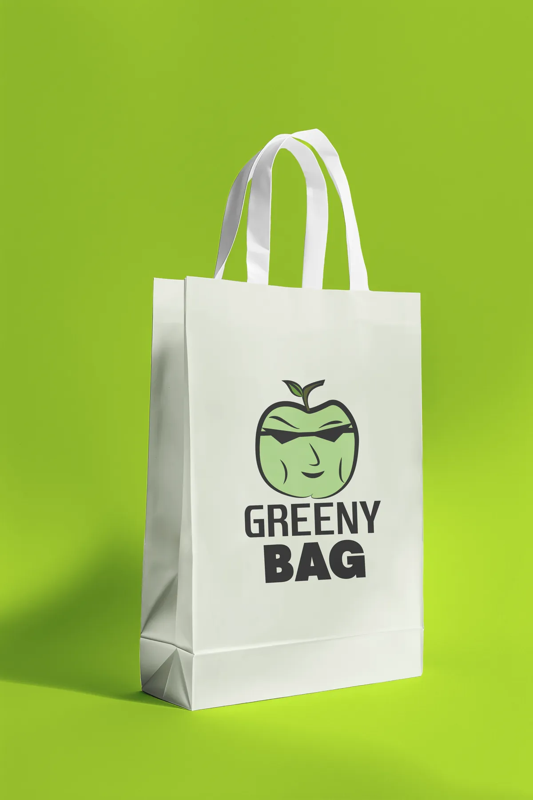
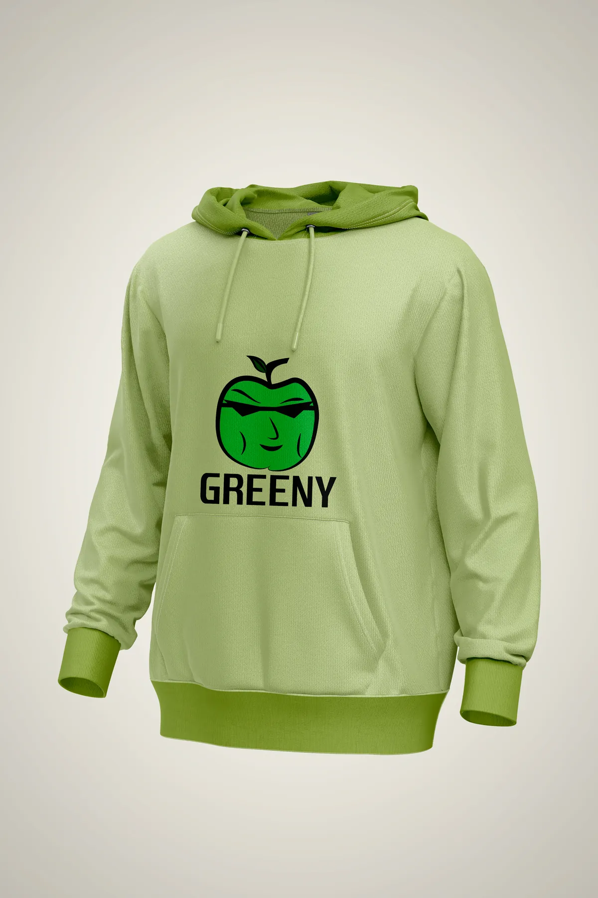

Diario de 3D
Modelado, materiales e iluminación en Blender. El objetivo es integrar volumen a composiciones 2D sin que se note la costura.
Blender · En curso
Diseño identidades, interfaces y piezas en movimiento. Estudio Diseño Digital y Videojuegos en la Universidad de La Punta, San Luis.
Selección · 3 piezas
Identidad, interfaz y movimiento. En cada proyecto cambia el rubro, el formato y la herramienta. Lo que no cambia es el criterio con el que se arma cada pieza.
UI/UX · Motion · Illustrator, Photoshop, After Effects
Un ecosistema visual completo para el stream de Tuty_s2: paleta, logo, paneles y pantallas de estado. Diseñado para acompañar el gameplay, no para competir con él.
01 / 07
Paleta y logo
Proceso
Entrevista de paleta y referencias, tres conceptos, vectorización en Illustrator, UI en Photoshop y animación en After Effects. La regla fue simple: nada que tape el gameplay.
Branding · Illustrator, Photoshop
Identidad visual e indumentaria para una marca ficticia de ropa. Un sistema que tiene que funcionar igual en una bolsa de tela que en un buzo.


Proceso
Análisis de identidad, definición del sistema gráfico y mockups realistas en Photoshop para la presentación de marca. El desafío fue sostener la misma personalidad en soportes muy distintos.
Publicidad · Motion · Photoshop, After Effects
Piezas promocionales para redes, adaptadas al rubro y al formato. Acá el requisito no era lucirse: era que se entienda el producto, el precio y cómo comprar.
Aprendizaje
Componer en Photoshop con colores específicos del rubro y animar en After Effects para darle dinamismo. Ahí entendí que la jerarquía no es decoración: es lo que hace que alguien encuentre el precio.
Perfil
Soy estudiante avanzado de la Tecnicatura en Diseño Digital y Videojuegos en la Universidad de La Punta. Elegí el diseño porque me gusta construir sistemas visuales que funcionen y cuenten una historia: una interfaz, una marca o una pieza en movimiento.
Hoy cruzo Blender con la suite de Adobe para ampliar el rango. Me interesa entender qué sostiene cada decisión estética: por qué este peso, por qué este color, por qué este orden.
Stack
Las que uso todos los días, y para qué. Sin logos ni barras de nivel: lo que importa es la pieza terminada.
En proceso
Modelado, materiales e iluminación en Blender. El objetivo es integrar volumen a composiciones 2D sin que se note la costura.
Blender · En curso
Micro-interacciones, estados de hover y prototipado. Probar en Figma antes de escribir una línea de código.
Figma · En curso
Sin plantilla ni builder: estructura, tipografía y color escritos a mano en HTML, CSS y JavaScript. También es una pieza del portfolio.
Código · 2026
Contacto
Busco mi primera oportunidad full-time o proyectos freelance. Si tenés una marca, una interfaz o una pieza que necesita movimiento, escribime.